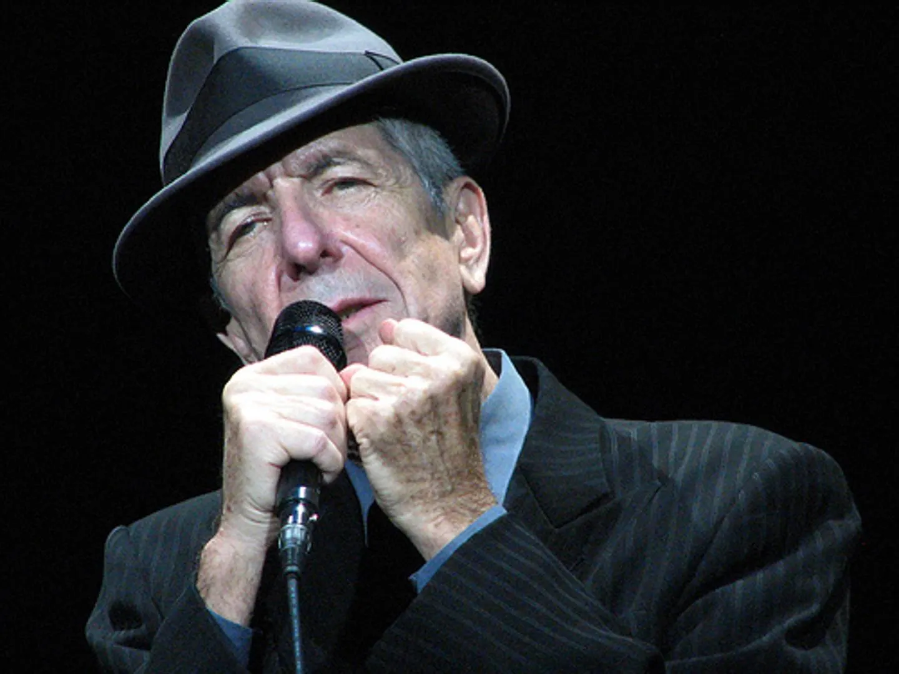

Леона́рд Но́рман Ко́эн — канадский поэт, писатель, певец и автор песен. Первый поэтический сборник опубликован в 1956 году, первый роман — в 1963 году. В ранние годы песни Коэна основывались на фолк-музыке, в 1970-х тяготели к поп-музыке и кабаре. С 1980-х годов Коэн стал петь низким голосом в сопровождении синтезатора и женского бэк-вокала. Его песни часто эмоционально напряжённые и со сложными текстами. Среди тем, о которых пел Коэн, — религия, одиночество, сексуальность, сложные отношения между людьми. Песни и поэзия Коэна оказали большое влияние на многих поэтов-песенников и музыкантов. Леонард Коэн введён в Канадский музыкальный зал славы; 19 апреля 1991 года стал офицером ордена Канады, а с 10 октября 2002 года — компаньоном ордена Канады, что является высшей наградой для гражданина этой страны. На его песни существует множество кавер-версий.
Биография
Музыка

Коэн выпустил множество альбомов, включая "Songs of Leonard Cohen", "I'm Your Man" и "You Want It Darker". Его музыка оказала значительное влияние на многих музыкантов по всему миру.
Поэзия
Тексты Коэна — тяжелые, сложные, напряженные. Поэта волнует все, проиходящее вокруг него — от взаимоотношений между людьми до мировой политики. Но о чем бы не говорил тонкий, умный, чуткий Коэн — он всегда остается вдумчивым, глубоким, немного ироничным и всегда влюбленным в человека и человечество. Перевод стихотворений Леонарда Коэна специально для блога Верлибры и другое подготовил Ал Пантелят. Етественно, все стихи Леонарда Коэна, публикаемые нами, написаны в такой поэтической форме, как верлибр.